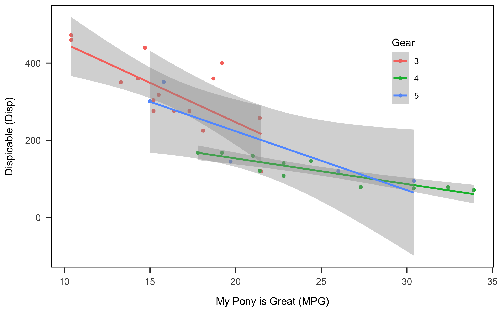

rmarkdown
Sue Song
2018-11-04
R environment
Structure
Header
Metadata in the Header (YAML)

translate the argument into YAML using yaml::as.yaml.
cat(yaml::as.yaml(list(
title = "example document",
author = "su so"
)))## title: example document
## author: su soEssential components: 1. output format + html_document + word_document + pdf_document
bibliographyuse (R Core Team 2018)
Code chunks
Step 1. Insert code chunks
Keyboard shortcuts: - Ctrl + Alt + I (Windows) - Cmd + Option + I (Mac)
Step 2. Define chunk options
Options for the output documents
A full list of options available here.
eval: execute a code chunk? echo: include the source code in the output document? +selective inclusion: e.g., echo=3:5
x <- c("a", "b", "c") #3
y <- c(1:3) #4
cbind(x, y) #5## x y
## [1,] "a" "1"
## [2,] "b" "2"
## [3,] "c" "3"*results: +hide: hide result in the text output? +asis:
cat("This is how results are written\n as is.")This is how results are written as is. warning, message, error: show warnings and (error) messages in the output document? include: do not show in the output document (but still run the code chunk) +equivalent to echo=F, results='hide', warning=F, message=F *cache: computations are saved to prevent re-running the code chunk (unless there are changes) +audodep: if a code chunk that subsequent code chunks depend on changes
Options for the figures & plots
*fig.width and fig.height define plots in inches. +fig.dim = c(6, 4) is equivalent to fig.width=6, fig.height=4
Step 3. Code away
Create a plot
plot(cars)
As shown in @ref(fig1), there is a relationship.
APA-formatted Plot
ggplot(mtcars, aes(x = mpg, y = disp, colour = as.factor(mtcars$gear))) +
geom_point() +
geom_smooth(method = "lm") +
labs(x = "My Pony is Great (MPG)",
y = "Dispicable (Disp)") +
scale_color_discrete("Gear") +
papaja::theme_apa(box = T) +
theme(legend.position = c(0.8, 0.75))
ggsave("plot.png", width = 8, height = 5)
# unlink("plot.png")Import figures
knitr::include_graphics(here("plot.png"))
table
Using knitr::kable
mtcars %>%
summarise(n = n(),
disp_mean = mean(disp, na.rm = T),
disp_sd = sd(disp, na.rm = T)) %>%
as.tibble() %>%
knitr::kable(booktabs = T,
caption="Summary Table",
digits = 2)| n | disp_mean | disp_sd |
|---|---|---|
| 32 | 230.72 | 123.94 |
Test statistics
knitr::kable(coef(summary(lm(disp ~ wt*as.factor(gear),
data = mtcars))),
digits = 2)| Estimate | Std. Error | t value | Pr(>|t|) | |
|---|---|---|---|---|
| (Intercept) | -50.16 | 56.99 | -0.88 | 0.39 |
| wt | 96.71 | 14.34 | 6.75 | 0.00 |
| as.factor(gear)4 | 26.55 | 80.74 | 0.33 | 0.74 |
| as.factor(gear)5 | -66.28 | 93.83 | -0.71 | 0.49 |
| wt:as.factor(gear)4 | -40.68 | 25.67 | -1.58 | 0.13 |
| wt:as.factor(gear)5 | 24.43 | 30.82 | 0.79 | 0.44 |
knitr::kable(broom::tidy(lm(disp ~ wt*as.factor(gear),
data = mtcars)),
digits = 3)| term | estimate | std.error | statistic | p.value |
|---|---|---|---|---|
| (Intercept) | -50.162 | 56.985 | -0.880 | 0.387 |
| wt | 96.712 | 14.336 | 6.746 | 0.000 |
| as.factor(gear)4 | 26.550 | 80.737 | 0.329 | 0.745 |
| as.factor(gear)5 | -66.280 | 93.834 | -0.706 | 0.486 |
| wt:as.factor(gear)4 | -40.676 | 25.671 | -1.585 | 0.125 |
| wt:as.factor(gear)5 | 24.431 | 30.819 | 0.793 | 0.435 |
Text paragraphs
inline formatting
equation
summary(lm.fit <- lm(disp ~ as.factor(gear)*wt,
data = mtcars))##
## Call:
## lm(formula = disp ~ as.factor(gear) * wt, data = mtcars)
##
## Residuals:
## Min 1Q Median 3Q Max
## -74.125 -21.352 -4.293 23.814 83.417
##
## Coefficients:
## Estimate Std. Error t value Pr(>|t|)
## (Intercept) -50.16 56.99 -0.880 0.387
## as.factor(gear)4 26.55 80.74 0.329 0.745
## as.factor(gear)5 -66.28 93.83 -0.706 0.486
## wt 96.71 14.34 6.746 3.7e-07 ***
## as.factor(gear)4:wt -40.68 25.67 -1.585 0.125
## as.factor(gear)5:wt 24.43 30.82 0.793 0.435
## ---
## Signif. codes: 0 '***' 0.001 '**' 0.01 '*' 0.05 '.' 0.1 ' ' 1
##
## Residual standard error: 44.68 on 26 degrees of freedom
## Multiple R-squared: 0.891, Adjusted R-squared: 0.87
## F-statistic: 42.5 on 5 and 26 DF, p-value: 1.058e-11\(y_{ij}\) = \(\beta_0 + \beta_1 age + e\)
…a positive slope, \(\beta\) = 96.71, \(p\) = 0
r-squared: \(R^2\)
chi-square: \(\chi^2\)
For more LaTex math symbols
block quote
…As this pseudo-workshop dragged on, the scholars have struggled to sit through the talk. People wondered, when is this misery going to end?
— scholars
footnote
[1] [1]: This is where a foot notes.
Citing references
Add the following lines in the YAML header:
csl: apa.csl bibliography: reference.bib —
- cite away (see Hall, Schmader, and Croft 2015; also Joel, MacDonald, and Page-Gould 2017). Will Michael Hall said (2015)…
citr add-in
# install.packages("citr")
options(citr.use_betterbiblatex = T)papja
Step 1. papaja::r_refs to create a bib file + .bib file will include citations for R and R packages used in the session.
papaja::r_refs(file = "zotero_ref.bib")Step 2. papja::cite_r to translate them into human-readable citations
citations <- papaja::cite_r(file="zotero_ref.bib"
#, pkgs = c("papaja", "here")
#, withhold = F
#, footnote = T
)I used R [Version 3.5.1; @] and the R-packages }base [@}R-base], bindrcpp (Version 0.2.2; Müller 2018), dplyr (Version 0.7.7; Wickham et al. 2018), forcats (Version 0.3.0; Wickham 2018a), ggplot2 (Version 3.1.0; Wickham 2016), here (Version 0.1; Müller 2017), knitr (Version 1.20; Xie 2015), purrr (Version 0.2.5; Henry and Wickham 2018), readr (Version 1.1.1; Wickham, Hester, and Francois 2017), shiny (Version 1.1.0; Chang et al. 2018), stringr (Version 1.3.1; Wickham 2018b), tibble (Version 1.4.2; Müller and Wickham 2018), tidyr (Version 0.8.2; Wickham and Henry 2018), and tidyverse (Version 1.2.1.9000; Wickham, n.d.) for the data analysis.
Creating your own workflow
1. Importing a dataset from the master script
2. Run analyses like a boss
Eligibile participants
Demographics
(demographics <- df %>%
# group_by(attn_check) %>%
filter(exclusion == "eligible") %>%
summarise(n = n(),
age = mean(age, na.rm = T),
female = length(which(gender == "female")),
male = length(which(gender == "male"))))## # A tibble: 1 x 4
## n age female male
## <int> <dbl> <int> <int>
## 1 205 33.3 90 113In a sample of 205 participants…
Regression analyses
Resources
References
Chang, Winston, Joe Cheng, JJ Allaire, Yihui Xie, and Jonathan McPherson. 2018. Shiny: Web Application Framework for R. https://CRAN.R-project.org/package=shiny.
Hall, William M., Toni Schmader, and Elizabeth Croft. 2015. “Engineering Exchanges: Daily Social Identity Threat Predicts Burnout Among Female Engineers.” Social Psychological and Personality Science 6 (5): 528–34. https://doi.org/10.1177/1948550615572637.
Henry, Lionel, and Hadley Wickham. 2018. Purrr: Functional Programming Tools. https://CRAN.R-project.org/package=purrr.
Joel, Samantha, Geoff MacDonald, and Elizabeth Page-Gould. 2017. “Wanting to Stay and Wanting to Go: Unpacking the Content and Structure of Relationship Stay/Leave Decision Processes.” Social Psychological and Personality Science. https://doi.org/10.1177/1948550617722834.
Müller, Kirill. 2017. Here: A Simpler Way to Find Your Files. https://CRAN.R-project.org/package=here.
———. 2018. Bindrcpp: An ’Rcpp’ Interface to Active Bindings. https://CRAN.R-project.org/package=bindrcpp.
Müller, Kirill, and Hadley Wickham. 2018. Tibble: Simple Data Frames. https://CRAN.R-project.org/package=tibble.
R Core Team. 2018. R: A Language and Environment for Statistical Computing. Vienna, Austria: R Foundation for Statistical Computing. https://www.R-project.org/.
Wickham, Hadley. 2016. Ggplot2: Elegant Graphics for Data Analysis. Springer-Verlag New York. http://ggplot2.org.
———. 2018a. Forcats: Tools for Working with Categorical Variables (Factors). https://CRAN.R-project.org/package=forcats.
———. 2018b. Stringr: Simple, Consistent Wrappers for Common String Operations. https://CRAN.R-project.org/package=stringr.
———. n.d. Tidyverse: Easily Install and Load the ’Tidyverse’.
Wickham, Hadley, Romain François, Lionel Henry, and Kirill Müller. 2018. Dplyr: A Grammar of Data Manipulation. https://CRAN.R-project.org/package=dplyr.
Wickham, Hadley, and Lionel Henry. 2018. Tidyr: Easily Tidy Data with ’Spread()’ and ’Gather()’ Functions. https://CRAN.R-project.org/package=tidyr.
Wickham, Hadley, Jim Hester, and Romain Francois. 2017. Readr: Read Rectangular Text Data. https://CRAN.R-project.org/package=readr.
Xie, Yihui. 2015. Dynamic Documents with R and Knitr. 2nd ed. Boca Raton, Florida: Chapman; Hall/CRC. https://yihui.name/knitr/.